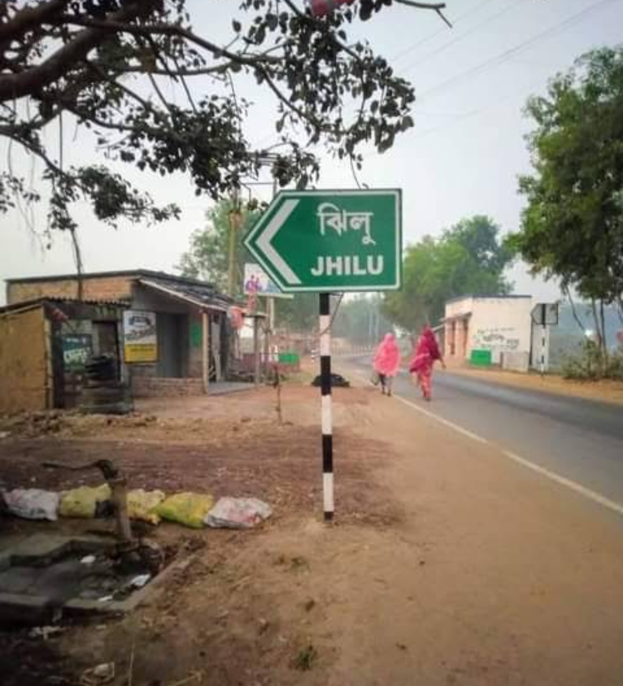

Village Gallery


Information • Services • Community
Jhilu is a village located in Mangolkote block of Purba Bardhaman district, West Bengal, India. The village is governed by Jhilu-I Gram Panchayat. Jhilu is situated around 26 km from Katwa town and about 37 km from Bardhaman.
| District | Purba Bardhaman |
| Police Station | Mongalkote |
| Post office | Jhilu |
| Block | Mangolkote |
| Gram Panchayat | Jhilu-I |
| Pincode | 713147 |
| Nearest Town | Katwa (26 km) |
Population (2011 census)
Schools
Health Center
| Category | Total | Male | Female |
|---|---|---|---|
| Population | 5311 | 2738 | 2573 |
| Children (0-6) | 679 | 349 | 330 |
| Literacy | 3035 | 1659 | 1376 |

Welcome to jhilu Village Portal.
| School Name | Type |
|---|---|
| Jhilu A.H.M Institution | Secondary School |
| Jhilu F.P School | Primary School |
| Jhilu V.S.S Niketan | Primary School |
| Jhilu Paschim Para F.P school | Primary School |
Jhilu Post Office
village Online centre
Jhilu Primary School
Jhilu HWC
Jhilu-I Gram Panchayat
Local Shops & Grocery
Jhilu village is located in Mangolkote block of Purba Bardhaman district, West Bengal, India.
The Gram Panchayat of Jhilu is Jhilu-I.
The pincode of Jhilu is 713147.
According to the 2011 census, Jhilu village has a total population of 5,311 people.
There are about 1,210 households in Jhilu village.
📢 Want to upload your book?
If you want to sell or donate your old books,
please send book photo & details on WhatsApp.